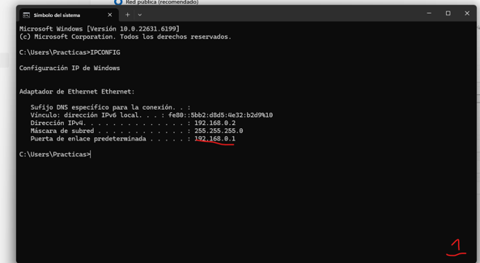
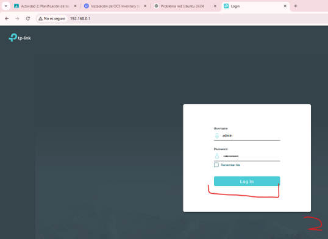
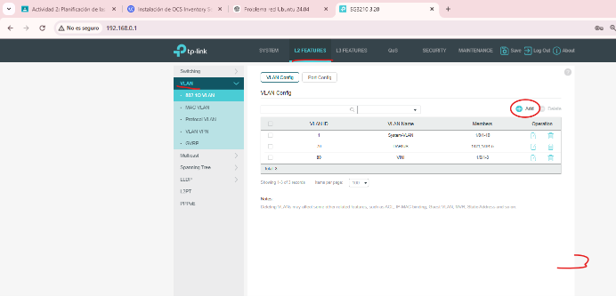
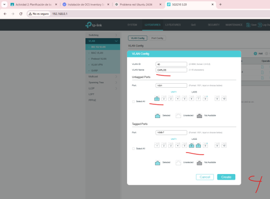
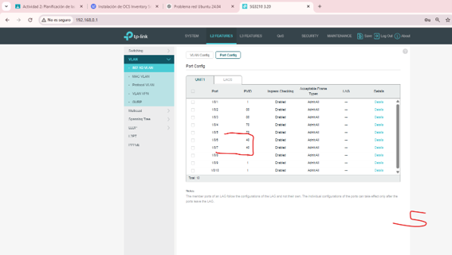
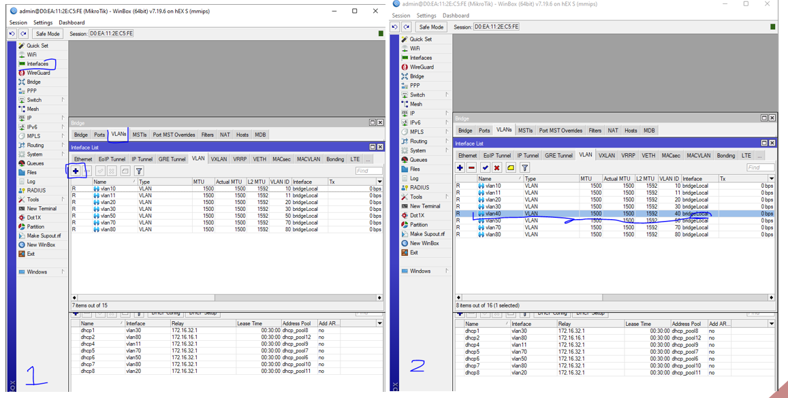
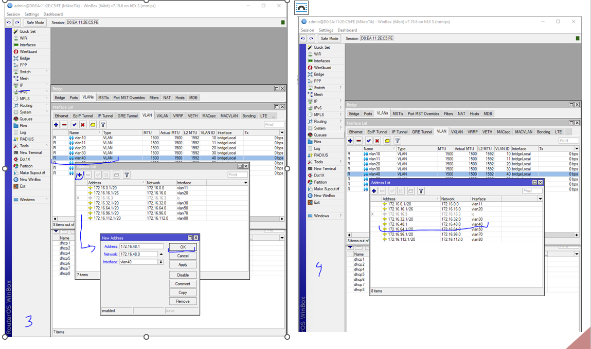
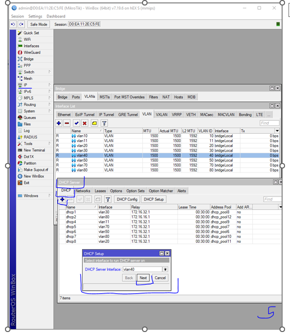
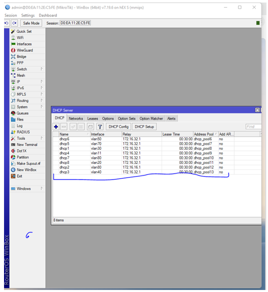
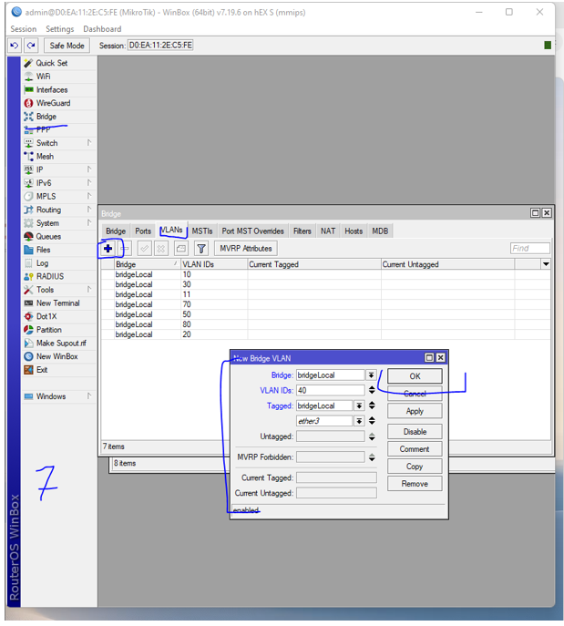

Introducción a la implementación física
Una vez validada la topología lógica mediante simulación, se procedió al despliegue físico de la infraestructura de red en el laboratorio.
El objetivo principal consistió en segmentar la red mediante VLANs, establecer enlaces troncales 802.1Q y permitir el enrutamiento inter-VLAN mediante un router MikroTik.
Para ello se utilizaron:
- Switch TP-Link SG3210
- Router MikroTik hEX S
- WinBox
- VLANs 802.1Q
- DHCP dinámico
Auditoría inicial del host
Antes de acceder al switch TP-Link, se verificó la configuración IP del equipo cliente mediante consola Windows.
IPCONFIG
El sistema devolvió:
- IP: 192.168.0.2
- Máscara: 255.255.255.0
- Gateway: 192.168.0.1

Acceso al panel TP-Link
Posteriormente se accedió al entorno web de administración del switch TP-Link SG3210.
http://192.168.0.1
Se utilizaron credenciales de administrador para acceder al panel de configuración.

Creación de VLAN en TP-Link
Desde el apartado VLAN Config se creó la VLAN 40 asociada al departamento CARLOS.
Se configuraron:
- Puertos Untagged
- Puertos Tagged
- Enlaces troncales


Configuración PVID
Después se verificó la correcta asignación del PVID 40 sobre los puertos configurados.
También se activó el control Ingress Checking para asegurar el aislamiento de tráfico.

Configuración de VLAN en MikroTik
Utilizando WinBox se creó una interfaz virtual VLAN 40 dentro del router MikroTik.
Esta interfaz se asoció al bridge principal bridgeLocal.

Asignación de dirección IP
Posteriormente se asignó la dirección IP estática que actuaría como gateway de la VLAN 40.
172.16.48.1/20
Esta dirección permitiría el acceso entre segmentos y la salida de los clientes.

Configuración del servidor DHCP
Se desplegó un servidor DHCP sobre la interfaz vlan40 utilizando el asistente DHCP Setup.
El servidor entregaría automáticamente:
- Direcciones IP
- Máscara de subred
- Gateway
- DNS


Asociación VLAN al Bridge
Finalmente se añadió la VLAN 40 al bridge principal del MikroTik para permitir el etiquetado correcto del tráfico troncal.
También se asociaron las interfaces tagged correspondientes al puerto ether3.

Conclusión
Con esta implementación física se consiguió desplegar una infraestructura VLAN funcional completamente operativa sobre hardware real.
La actividad permitió comprender el funcionamiento práctico de switching, etiquetado 802.1Q, DHCP dinámico y enrutamiento inter-VLAN.